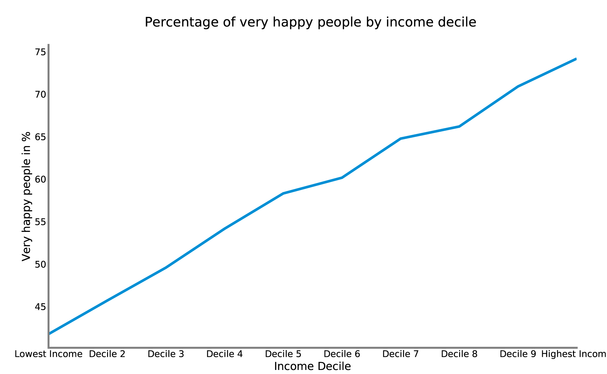

Some people are happy. Some people are not. The European Social Survey asks people in Europe regularly, how happy they are – on a scale from 0 to 10. What kind of people are super happy?
Percentage of happy people
A closer look at regional distribution shows that in the middle of Europe there is also a gap inside of countries. In Germany some Western regions feel happier than Eastern areas. The same can be said of Poland.
Data by income decile – the income distribution separated in ten equal parts – shows: Yes, absolutely! The richer people are, the higher is the probability that they identify themselves as very happy. The difference between the top and the bottom decile is 30 percentage points!
 However, if you belong to the minority in a country, the survey results suggest that you are actually unhappier than the majority in your country.
However, if you belong to the minority in a country, the survey results suggest that you are actually unhappier than the majority in your country.
On the other hand doesn't it make people happier when they crave for riches. The more important it was for people to be rich, the less was the probability that they are happier. The lowest proportion of very happy people can be found in the group of people who said that "it is like me" when they were confronted with statements where people said that to be rich and affording expensive things is important.
> What is your income?
> How many friends do you have to discuss personal topics?
> How healthy are you?
> How religious are you?
> How old are you?
To answer this question let's have a look on people who say that they are very happy. (As very happy are people defined who say their happiness is above 7 out of 10).
Where do the happy people live?
First some averages: The happiest respondents live in Scandinavia and Switzerland measured by the percentage of very happy people. Denmark consists of almost 79% very happy people, Finland has over 75% and Switzerland has more than 74%. The least happy are the people in Central and Eastern Europe. Less than a Third of Hungarians and Lithuanians said that they were very happy. Czechs and Estonians have a percentage of around 44% of very happy persons.Percentage of happy people
Data: European Social Survey, Chart: Alexander Trentin
A closer look at regional distribution shows that in the middle of Europe there is also a gap inside of countries. In Germany some Western regions feel happier than Eastern areas. The same can be said of Poland.
Are single people unhappier?
There is a notable difference between people in a relationship and those how are not. People who say that they live with a partner have a more than 10 percentage points higher probability to identify themselves as "very happy".Data: European Social Survey, Chart: Alexander Trentin
What's about religion?
The more religious people are, the happier they are. At least when people are somehow committed to your religion, people are more likely to say that they are very happy. The happiest people have on average a level of religiousness of 9 out of 10. However, if you are not really committed, it helps to be less religious. The lowest happiness levels have people on a scale of 4 out of 10. It increases the probability to be "very happy" when you increase your religiousness level from 4 to 9.
Data: European Social Survey, Chart: Alexander Trentin
Are happy people younger?
The older people are, the less likely it is that they identify themselves as very happy. However, at an older age, the effect is not clear. There are some ages above the age 70 where less than 50% identify themselves as very happy. While of people in the mid-20s, more than 60% say that they are very happy. Data: European Social Survey, Chart: Alexander Trentin
Are rich people happier?
The regional data suggests on a first glance that richer European regions have a higher percentage of happy people. But is that also true on an individual level?Data by income decile – the income distribution separated in ten equal parts – shows: Yes, absolutely! The richer people are, the higher is the probability that they identify themselves as very happy. The difference between the top and the bottom decile is 30 percentage points!

Data: European Social Survey, Chart: Alexander Trentin
Unhappy immigrants?
People not living in their home country don't seem less happy than the native population. They percentage of "very happy people" does not change if you are born in the country you live or you move there later.
Data: European Social Survey, Chart: Alexander Trentin
Data: European Social Survey, Chart: Alexander Trentin
Does education help?
The higher educated you are, the higher is the probability that you say you are very happy. People with a four year school education say only with a 40% probability that they are very happy. While people with almost 20 years of schooling say they are very happy with a probability of almost 70%.Data: European Social Survey, Chart: Alexander Trentin
Does sport make you happy?
If you don't do sports at all, it might make you happier if you do a bit of sports. The peak of the proportion of very happy people was if people engaged in sports four days in a week. The effect on the proportion of very happy people was negative, if people did more than four days of sport.
Data: European Social Survey, Chart: Alexander Trentin
It's all about attitude
Not only the outside circumstances define, if people are happy. Also the attittude is an important part. When people said t"to have a good time" is important in their life, they had a higher probability to be very happy. People who said that having a good time is not important at all in their live, declared only with a proportion of less than 45% that they are very happy. People who said that it was very important to have a good time were with a probability of more than 65% very happy.
Data: European Social Survey, Chart: Alexander Trentin
On the other hand doesn't it make people happier when they crave for riches. The more important it was for people to be rich, the less was the probability that they are happier. The lowest proportion of very happy people can be found in the group of people who said that "it is like me" when they were confronted with statements where people said that to be rich and affording expensive things is important.
Data: European Social Survey, Chart: Alexander Trentin
Try it out yourself
Here is an interactive data visualization to fit the survey results on your personal situation.
> What is your income?
> How many friends do you have to discuss personal topics?
> How healthy are you?
> How religious are you?
> How old are you?